| (1) |
| 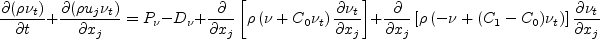 | (2) |
| 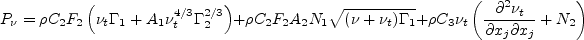 | (3) |
| 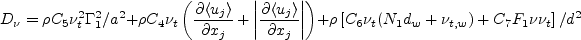 | (4) |
| 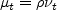 | (5) |
| 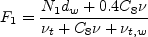 | (6) |
| 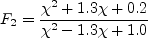 | (7) |
| 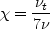 | (8) |
| 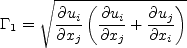 | (9) |
| 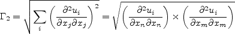 | (10) |
| 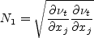 | (11) |
| 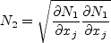 | (12) |
| 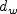 | (13) |
| 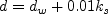 | (14) |
| 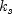 | (15) |
| 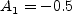 | (16) |
| 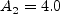 | (17) |
| (18) |
| (19) |
| 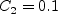 | (20) |
| (21) |
| 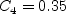 | (22) |
| (23) |
| (24) |
| (25) |
| (26) |
| 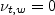 | (27) |
| 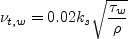 | (28) |
| (29) |
| 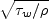 | (30) |
| (31) |
| (32) |
| (33) |
| 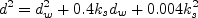 | (34) |